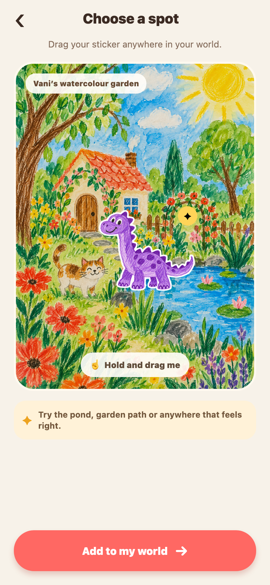
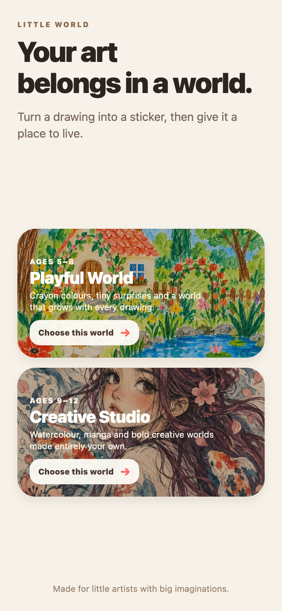
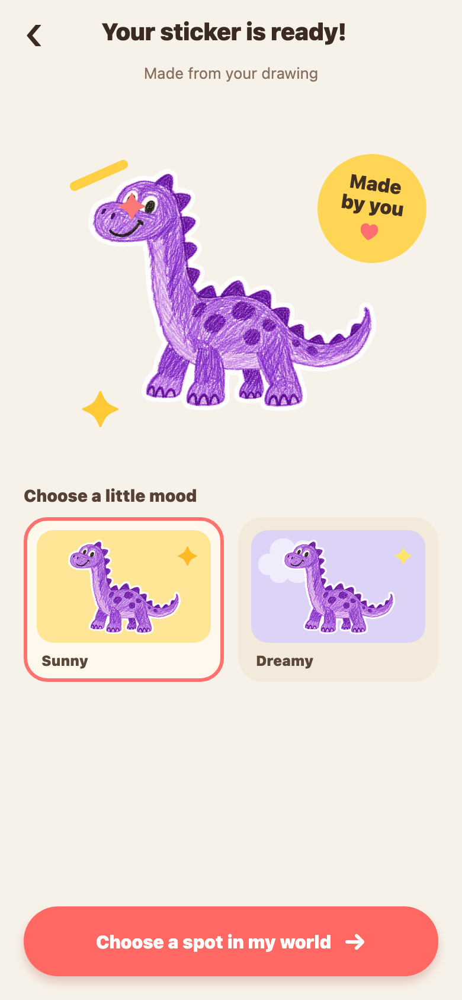
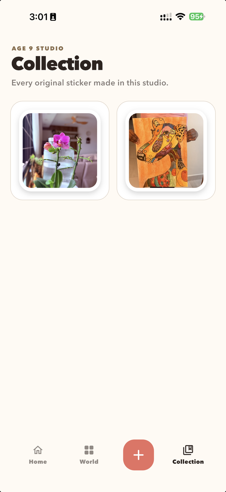

The child’s mark comes first
The interface frames the drawing; it does not polish away its wobble, texture or personality.
Personal project · Creative play

What it means to me
Children make tiny characters, odd animals and whole stories in a few lines. Most disappear into a drawer. Little World began as a way to honour that imagination: give each drawing a place to live, while keeping the experience quiet, private and owned by the family.
What I expected
Once I mapped the journey, the important part changed. The cut-out was not the reward—the world was. The product needed to make capture simple, preserve the child’s original mark, and make placement feel meaningful.
What I built

Choose a worldBegin with an age-appropriate visual world without a long setup.

Keep its characterChoose a mood while preserving the wobble and texture of the original drawing.
Place itDrag the new sticker into a private family world.
Built & tested


Design principles
The interface frames the drawing; it does not polish away its wobble, texture or personality.
Capture, style and placement are separated so the flow stays easy to understand.
The world is “just for family.” Sharing is deliberate, not an open social feed.
UI direction
The art brings the personality. The product shell stays calm: warm paper, dark ink, large touch targets and a restrained set of primary colours. Texture appears where it supports the child-made feeling, while navigation remains familiar and legible.
What’s next
I would test placement and depth with children, improve edge detection on messy backgrounds, and explore small story prompts that connect two or three drawings—without adding points, streaks or pressure to perform.